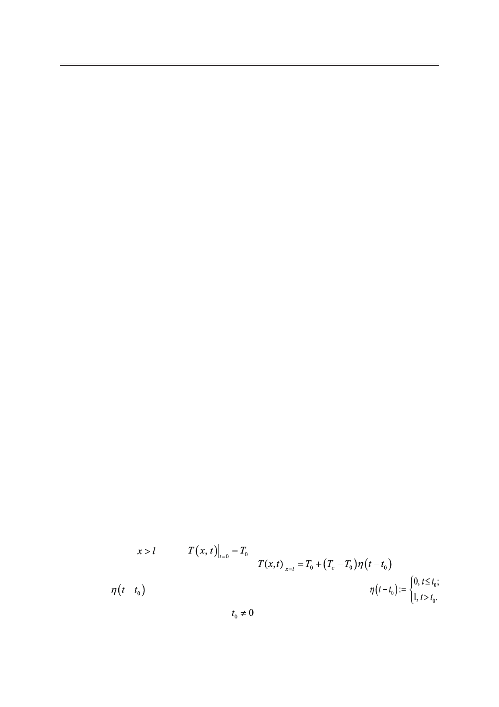

И.А. Джемесюк, С.Г. Горбунов
The article examines the relaxation processes that occur in an elastic solid medium
when it is heated and cooled, especially their influence on the temperature field. Besides,
we considered in this paper the heat equation of parabolic type arising in the theory of
thermal conductivity for different modes of heating the border. We present a solution of
the boundary value problem of nonstationary heat conduction for an infinite plate with
the following regimes of loading the boundaries: a single slow temperature change at the
border, a single instantaneous temperature variation at the border, and, finally, multiple
instantaneous changes of temperature at the border. In order to solve these three heat
problems, they were brought to a dimensionless form. Then the operational calculus
method was applied. The essence of the method consists in the following. According to
the obtained analytical solutions three-dimensional graphics characterizing the relaxations
processes were built in the computer algebra system Wolfram Mathematica for different
ranges of the Fourier criterion.
Keywords: relaxation time, mathematical modeling, dimensionless variables, integral
Laplace transform.
Метод интегральных преобразований нашел широкое распространение при реше-
нии уравнения теплопроводности в конечных и бесконечных областях класси-
ческого типа: бесконечные пластины, длинный тонкий однородный стержень и т.д. Он
позволяет получать аналитические решения тепловых задач по стандартной схеме [1]:
1. Применение преобразования Лапласа: переход от известных и неизвестных функ-
ций их изображениям, запись уравнения в изображениях [1], соответствующих решае-
мой задаче Коши [2];
2. Решение полученного уравнения, т.е. нахождение изображения искомого решения;
3. Применение обратного преобразования Лапласа: нахождение оригинала [3] для
полученного в п. 2 изображения решения.
Применим метод для решения ряда задач, представляющих интерес в технических
приложениях.
В обычной феноменологической теории теплоты предполагается, что скорость рас-
пространения тепла в среде бесконечно велика. Однако тепло как одна из форм, равно
как и механическая форма движения, имеет конечную скорость распространения. Вслед-
ствие сложной молекулярной структуры вещества, тепловой инерции, а также дефектов
в материале, происходит запаздывание во времени изменения температуры. Этот проме-
жуток времени – время релаксации.
Пусть в начальный момент времени распределение температуры по толщине беско-
нечной пластины
равно
. На левой границе произошел скачок темпе-
ратуры, описываемый следующей функцией
[4, с. 199],
(рис. 1), где
– функция Хевисайда [5], которая определяется как:
(доопределена значением 0 в точке t0 ),
. Чтобы найти закон распределения темпе-
ратуры по толщине пластины, рассмотрим следующую задачу:
Российский технологический журнал 2017 Том 5 № 5
41